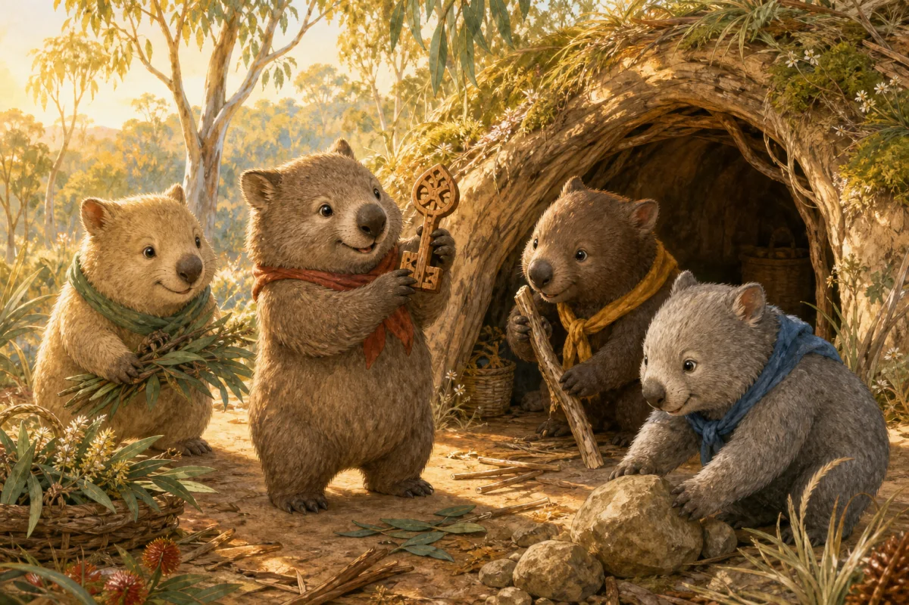
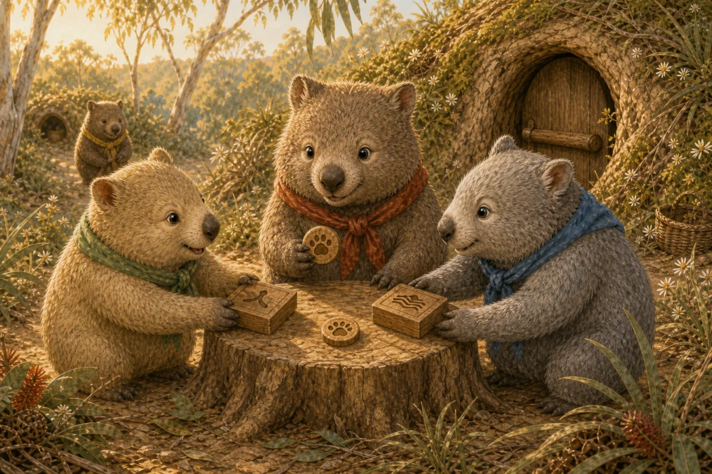
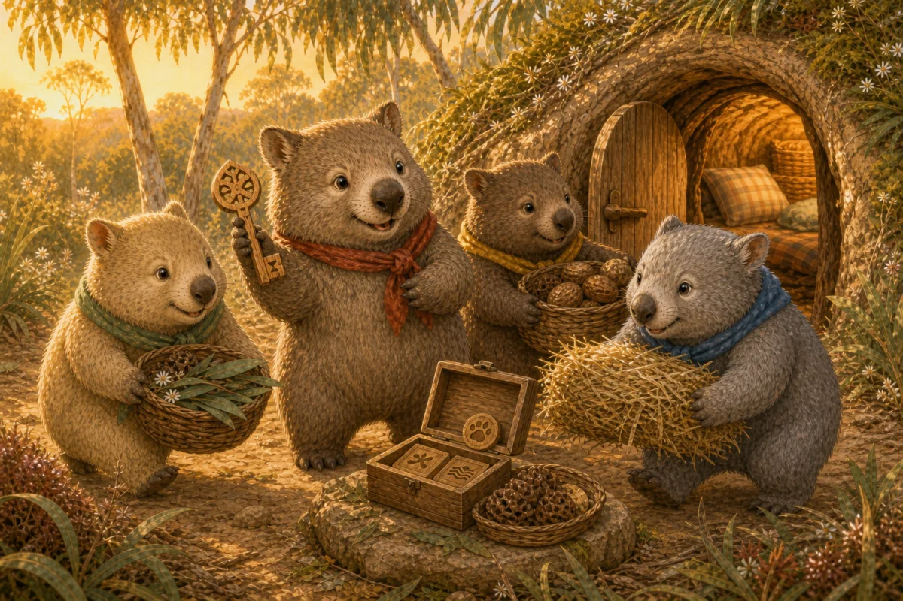

01Create identity
?
Mabel's wooden burrow key represents the identity key the browser creates and encrypts locally.
Hestia Recovery · guided extension preview
Follow Mabel the wombat through an optional recovery ceremony. Independent helpers coordinate around identity keys that remain anchored to the owner's Hestia state.

Mabel's wooden burrow key represents the identity key the browser creates and encrypts locally.
Each helper represents an independent recovery authority. Any two shares can reconstruct their part of the secret.
The original device can disappear without giving any authority enough information to restore the identity alone.

Two selected authorities independently verify the request and release their shares.

The two shares combine with Mabel's separately held factor to decrypt and restore the identity key.
Local cryptographic demo
The wombat story is fictional. The cryptography still runs locally in this browser, and no hosted coordinator receives the plaintext recovery material.
Recovery material
Optional communication